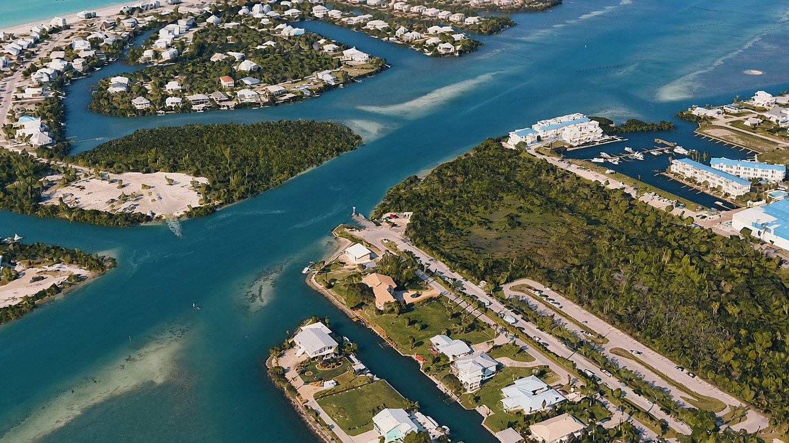

Draft preview for review. Not published. New Page for /explore/englewood/palm-island-knight-don-pedro/. Goes live 2026-12-07. Images shown from local copies. Rollout batch
Palm Island (Knight and Don Pedro Islands): Homes Reached by Car Ferry

Explore · Englewood · Palm Island
Palm Island is what locals call Knight and Don Pedro islands: bridgeless beach islands off Cape Haze where you drive onto a ferry to get home.
The ferry makes it easier than a boat-only island like Little Gasparilla, but it still feels removed from the mainland. Here is how the island works, what the county record shows, and what to check before you buy. For the mainland side, see Explore Englewood.
The short version
Car ferry. Drive on, drive off; no bridge.
Beach and bay. 91% of homes carry the county's waterfront flag.
State park next door. Don Pedro Island State Park, boat access only.
Higher price point. Median qualified home sale about $1,400,000.
870
island parcels
345
single-family homes
177
villas and condos
$1,400,000
median qualified home sale
Source: Charlotte County Property Appraiser, parcel file and subdivision list (downloaded Nov 20, 2026).
Location
Where Palm Island is
Between Manasota Key and Little Gasparilla.
The islands sit off the Cape Haze peninsula in Charlotte County, with Placida mailing addresses in ZIP 33946. The Intracoastal Waterway separates them from the mainland. The main island streets are North and South Gulf Boulevard on the Gulf side, with Palm Island Drive, Bocilla Drive, and Kettle Harbor Drive on the bay side.
Source: Charlotte County Property Appraiser, parcel file and subdivision list (downloaded Nov 20, 2026).
Getting there
The car ferry
Your commute starts on the water.
Palm Island Transit carries personal vehicles, contractors, and equipment between the mainland and the island. Its posted ferry hours run from 6:30 a.m. to 10 p.m. Sunday through Thursday, to 11 p.m. on Friday, and to midnight on Saturday. A separate water taxi runs midday. Hours and fares can change, so check before you plan a closing day or a move.
Source: Palm Island Transit.

The channel the Palm Island car ferry crosses.
Outdoors
Don Pedro Island State Park
A mile of Gulf beach reached only by boat.
Don Pedro Island State Park covers about 230 acres. Its island portion, between Knight Island and Little Gasparilla Island, is accessible only by private boat and offers about a mile of Gulf beach for swimming and shelling. The land base on Placida Road in Cape Haze has a fishing dock, trails, and a picnic shelter. Florida State Parks posts dock closures and fees on its site.
Source: Florida State Parks, Don Pedro Island State Park; Florida State Parks, experiences and amenities; Florida State Parks, hours and fees.
Homes
Palm Island homes for sale
Beach homes, bay homes, villas, and condos.
The county roll lists 345 single-family homes, 76 villas or townhomes, 101 condo units, and 160 vacant lots across the island plats. Homes were built from 1955 to 2026, with a median of 1991. The median single-family home has about 1,934 square feet, and 45 percent have a pool.
| Measure | Value |
|---|---|
| Island parcels | 870 |
| Single-family homes | 345 |
| Villas and townhomes | 76 |
| Condo units | 101 |
| Vacant lots | 160 |
| Median county just value, homes | $799,000 |
| Middle half of home just values | $576,000 to $1,086,000 |
| Qualified home sales, 2025 and 2026 | 25 (median $1,400,000) |
County figures come from the Charlotte County Property Appraiser's public parcel file (downloaded November 20, 2026). Just value is the county's market value estimate on the latest certified roll, not an appraisal or a list price. Sale figures use each parcel's most recent recorded sale when that sale was qualified and dated 2025 or 2026.
Source: Charlotte County Property Appraiser, parcel file and subdivision list (downloaded Nov 20, 2026).
Before you buy
Four checks on Palm Island
Plan around the ferry and the water.
Island ownership comes with its own costs and rules.
Ferry costs
Ask about resident passes and contractor fares.
Flood and wind
Pull the FEMA zone and elevation, and get quotes early.
Association rules
Island plats and condos have their own documents and fees.
Utilities
Confirm water, sewer or septic, and internet for the address.
Our insurance guide explains how coastal homes are priced.
Source: FEMA Flood Map Service Center.
FAQs
Palm Island: common questions
What is Palm Island?
Locals use Palm Island for the bridgeless barrier islands off Cape Haze that include Knight Island and Don Pedro Island, in Charlotte County. Most homes sit in the Palm Island Estates plat along North and South Gulf Boulevard.
How do you get to Palm Island?
By a private car ferry. Palm Island Transit carries personal vehicles and runs from 6:30 a.m. into the evening every day, with later hours on Friday and Saturday. Check its website for current hours and fares.
Can you visit Don Pedro Island State Park?
Yes, by private boat. Florida State Parks says the island portion of the park, between Knight Island and Little Gasparilla Island, is reached only by boat. It has about a mile of Gulf beach. The mainland land base on Placida Road is open by car.
What do homes on Palm Island cost?
The median county just value of a single-family home is about $799,000. The 25 qualified single-family sales in 2025 and 2026 had a median of about $1,400,000.
Are there lots left on Palm Island?
Yes. The county roll shows 160 vacant lots across the island plats. Anyone building should plan for ferry delivery of materials and check the flood zone.
Looking at Palm Island?
We can pull island sales, ferry details, and the flood zone for any home. Call or text The Helgemo Team at (941) 770-2275.
The office is at 320 Cross Street, Punta Gorda, Florida 33950. You can also meet Brian Helgemo or read more about the team.
Sources: Charlotte County Property Appraiser, parcel file and subdivision list (downloaded Nov 20, 2026); Palm Island Transit; Florida State Parks, Don Pedro Island State Park; Florida State Parks, experiences and amenities; FEMA Flood Map Service Center. Checked November 20, 2026.